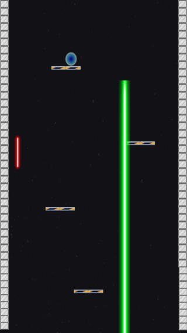
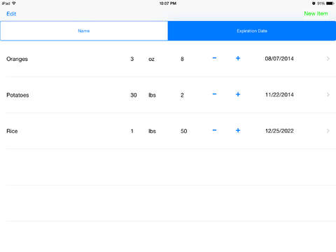
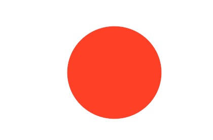

Projects

Bombfall is a simple arcade game that is currently on the iOS App Store and Google Play. Programmed in my free time,
it was a wonderful introduction to mobile programming. I created this app from square one. I first created a prototype
and elicited feedback from those that fit the persona. I was given a suprising amount of good feedback and implemented
most of it.
Creation
I used a program called Stencyl to create this application. While it dumbs programming down a lot, my algorithims for
movement and the difficulty level were semi-complex.
App Statistics
The app currently has over 500 cumulative downloads and five star ratings in both app stores.

Expiration Tracker was my first mobile app created from scratch. My sister was frustrated with her food storage
spoiling, so she asked me if I could make an app for her. The opportunity to create this app came when I was taking
a class about user interfaces. While this project was created for a class, it was much more work than was required
for credit in the class.
This app is very simple. It allows the user to create a list of their food storage, and organize it by the food name
or the expiration date; allowing them to easily scan what food items are spoiling soon.
Creation
The class I was taking when I created this app required a lot of design. I started by creating a persona and
interviewing people who met the critera. I then created paper prototpyes and showed them to multiple people.
Using the feedback I gained, I created a high-fidelity prototype, created a usability study and executed it.
The results from the usability study resulted in what the app looks like now.

Blippy
This project was assigned to me for a class. This was my first experience with java, and I had a lot of fun with it
I was on a team of three people. The application was requested by a high school biology teacher to quicky measure reflexes.
It is measures reflexes by randomly "blipping" a red circle on the screen, recording how long it takes for the user to respond.
After a specified amount of reactions, the application informs the user how long it took to react to each "blip". While we could
have generated more data using the statistics, the teacher wanted the students to do this.
Creation
I acted as team lead. We began by talking with our sponsor personally and getting an idea of what he was imagining.
using these ideas, we talked as a team and decided on our requirements and our general design. We then divided the work.
I was in charge of the user interface and created all of it. My two teammates worked on the back-end functionality.
We finished early, so we created more features for the program for disabled students.

Now Serving
Now Serving is an application developed by lab assistants at Brigham Young University-Idaho. It is the application that
is used in the Computer Science lab to help lab assistants help new students. The Now Serving server runs on a computer in front of
the lab, and listens for any questions triggered by an icon on each of the lab computers. Now serving is porgrammed in Java and is
a network-based application. One student in the school manages the software at a time to fix anything that may break.
Contribution
After getting complaints from the lab assistants, I fixed some minor interface issues.